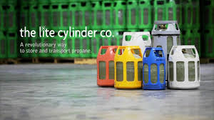

Have you ever been at work and left your kids at home and remembered that the kitchen was open to them? Yeah it frightens you. They could turn on the gas and probably just inhale it. You might just come back to meet dead kids.
Be no more afraid because Lucama is here to give your mind a rest from worry. The issue of unstable LPG cylinders has been an issue recurring in Ghana for a while now. Lucama group co. Ltd has been set up to help you as individuals to never worry about glass explosions at home and especially in the Kitchen. We present to you the future.
Contact us
Lucama Group